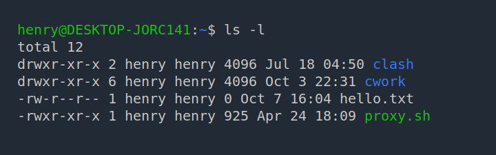
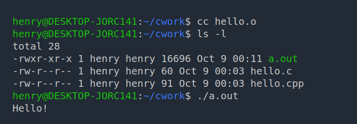

首页
导航
操作系统实验
《操作系统》课程是计算机科学与技术专业的主干课。操作系统是现代计算机系统中必不可少的基本系统软件，对计算机系统资源实施管理，是所有其他软件与计算机硬件的唯一接口，所有用户在使用计算机时都要得到操作系统提供的服务。
《操作系统》课程是一门理论和实践相结合的课程。通过《操作系统》实验教学，可以使学生深入地掌握操作系统的基本概念、基本原理，同时运用《操作系统》提供的方法与技巧对实际问题进行算法设计和程序设计，既能实现与课程同步练习、进一步深化理解和灵活掌握教学内容，又能培养学生程序设计及上机调试的能力。这将为学生《计算机体系结构》、《计算机网络》等后继课程的学习以及今后在相关领域的工作打下坚实的基础。
《操作系统》课程含有 18 学时的实验内容，要求学生完成 Linux 的初步认识、进程同步、进程通信、页面调度算法模拟等实验，使学生了解和掌握操作系统的基本原理，掌握常用操作系统的使用和一般的管理方法等内容。通过《操作系统》实践环节，培养学生认真分析问题、解决问题的能力，同时培养学生面对问题勤于思考及团队合作的意识，最终使学生达到理论与实践相结合的目的。
《操作系统》实验教学计划安排 6 个实验项目。由于每个项目都是一个综合训练，仅仅依靠上机三个学时是远远不够的，尤其是实验 6，具有很大的难度，教师可以根据学生的实际情况调整实验内容。这里要求每个同学上实验课前必须做好充分的准备，如问题的分析、数据类型和系统的设计以及程序的编写、初步的调试等等，上机实验课主要是教师和同学们一起讨论和交流，共同解决系统设计和调试中的问题。只有这样才能很好地达到实验教学的目的。
索引
实验一：Linux 的初步认识
实验课时：3学时
一、实验目的
- 了解 Linux 发行版（Ubuntu）的安装过程
- 掌握基本的 Shell 命令（bash）
- 了解 vi 编辑器的使用
- 设计一个 Shell 程序
- 设计 C 程序，在 Shell 下使用 gcc 编译器编译 C 程序
- 设计一个 Makefile 文件
二、实验原理
1. 安装过程
在主机上安装并使用虚拟机软件（如 VMware Workstation、Oracle VirtualBox 等），建立一个虚拟机。
针对 Ubuntu 的配置，可以选择 2 × CPU + 2 GB RAM 以及 20 GB 以上的磁盘空间，或遵循虚拟机软件的默认配置。
接着需要获取安装介质。可以在官方网站获取 Ubuntu 的安装镜像。
将安装介质装载在虚拟机（客户机）上，启动虚拟机。由于虚拟机“物理驱动器”上默认无操作系统，便会从“光盘驱动器”启动。“光盘驱动器”中装载的即为 Ubuntu 的安装镜像。
之后进行简单的配置。在设置用户名时，可以选择简单的用户名和密码组合，以便输入。
首次进入系统后，可以将软件包源配置为易于访问的镜像源。软件包提供方即为软件源，用户可以通过包管理器获得软件源下所提供的软件包。包管理器会在本地存取一份软件源下可用的软件包列表，即软件源缓存。切换软件源后、每次安装或更新软件包前，最好应该执行一次刷新软件源的操作。
可以在 Ubuntu 桌面应用列表中找到“Software & Updates”应用，更改其中的软件源。Ubuntu 官方下载的镜像安装的系统中包含诸多已有的镜像源。比如，我们可以选择“China”下的“https://mirrors.ustc.edu.cn/”。确认选择后，点击 Close 关闭应用，会提示用户进行刷新软件包缓存。
用户也可按下 Ctrl + Alt + T 组合键，或在应用列表中打开“终端（Terminal）”应用，在 Shell 中以超级用户（Super User）权限执行 apt update 命令刷新软件源缓存。
在首次使用前，还建议执行一次更新软件包的操作，即 apt upgrade：
$ sudo apt upgrade
用户默认以普通用户身份登入，需要使用
sudo来执行需要提权的操作。上述代码块中，行首的$表示目前处于普通用户模式，在输入命令时无需输入。在一次终端会话中首次使用
sudo时，会要求用户输入自己的密码。需要注意，键入密码不会回显，输入完成后按 Enter 提交即可。
更新完成后，可以重启一次客户机中的系统。
接下来安装一些其他开发所需软件包，如 C/C++ 编译器、git、CMake 等。可以通过安装 build-essential 伪包来安装构建所需的诸软件包。
$ sudo apt install build-essential git cmake
2. 常见 bash 命令
默认情况下，打开终端，其中运行的就是 Shell 程序。Shell 程序可以解析用户的输入，从而执行用户的指令，比如对计算机（系统）进行操作、运行其他程序。
Ubuntu 默认的 Shell 程序为 bash，有如下常见的命令。
- cd：改变当前目录命令
- pwd：显示目前所在目录的指令
- ls：列出指定目录的内容
- mkdir：建立目录
- cp：文件复制命令
- rm：删除文件或目录
- mv：文件移动、重命名
- chmod：变更档案属性
- df：查看系统的文件系统的空间使用情况
- du：查看具体某个文件和目录的磁盘空间的占用情况
- clear：清除终端中的输出
- whoami：查看当前登录用户名
用户可以使用“命令行选项”来控制命令的执行，即，向其传递（pass）命令行参数。
如，可以为 ls 命令添加 -l 参数，使其以列表形式输出目录下的内容；亦可以添加 -a 参数，使其输出目录下所有文件及子目录（包含隐藏文件和目录）。
有时候，我们可以将这种单字母的指令组合在一起，即，ls -l -a 等价于 ls -la。
用户还可自定义别名（alias），来简化命令的输入。比如，Ubuntu 默认启用了 la 和 ll 这两个别名，分别对应着 ls -a 和 ls -la。
有关管道、输出重定向、PATH 环境变量、任务控制等详情，另请阅读：
ls -l 命令输出类似如下：
$ ls -l
total 12
drwxr-xr-x 2 henry henry 4096 Jul 18 04:50 clash
drwxr-xr-x 6 henry henry 4096 Oct 3 22:31 cwork
-rw-r--r-- 1 henry henry 0 Oct 7 16:04 hello.txt
-rwxr-xr-x 1 henry henry 925 Apr 24 18:09 proxy.sh

可以看到，每行行首有诸如 drwxr-xr-x 这样的字符串，第一个字符表示文件类型，如 d 表示文件为目录、- 表示文件为普通文件、l 表示文件为链接。剩余字符三个一组，分别表示所有者权限、所有者同组用户权限，以及其他用户权限。
可以使用 chmod 命令修改文件权限。chmod 命令的常用格式如下：
chmod [OPTION]... MODE[,MODE]... FILE...
即，按照 MODE 所指定的规则修改某 FILE 的模式位。MODE 的格式为 [ugoa...][[-+=][perms...]]，其中 perms 可以是 rwxXst 之中的字母，如有多个字母，则以逗号 , 间隔。
ugoa 的组合表述该次修改所针对的用户：
u：文件的所有者g：文件所有者所在组中的其他用户o：不在文件所有者所在组中的用户，即除了u和g之外的用户a：所有用户
如果不指定 chmod 所针对的用户，则默认为所有用户。
+ 运算符表示增加对应的权限，- 运算符表示移除对应的权限，= 将增加对应的权限，而移除其余未指定的权限。
rwxX 分别代表：
r：读（read）权限w：写（write）权限x：可执行（execute）权限，或可检索目录权限X：仅当某用户对该文件拥有x权限、或该文件为目录时，才增添x权限
此外，可以使用 ugo 中的一个字母，来代指：
u：文件所有者具有的权限g：同组其他用户具有的权限o：非u或g类用户所具有的权限。
数码形式的模式使用 1 - 4 个八进制数码来表示，每个数码由 4、2、1 相加而得。省略的数码将被视作前导 0 来处理。第 2 - 4 位八进制数分别表示 u、g、o 的权限，每个数字由 4、2、1 三个数字相加而得。
- 4, (100)2：代表
r权限 - 2, (010)2：代表
w权限 - 1, (001)2：代表
x权限
比如，chmod a+x file 就是为所有用户添加 file 的可执行权限，其等价于 chmod +111 file。
或者，要修改一个文件为“当前用户 rwx 权限”“其他用户仅拥有 rx 权限”，则可以使用 chmow 755 file。
可以使用
man chmod查看关于chmod命令的详细说明。
可以使用 useradd 命令创建用户。直接键入 useradd 命令，或者添加 -h 选项，可以看到相关帮助信息。
使用 -m 参数，会为用户在 /home/ 目录下创建与用户名同名的用户目录。
假设新建的用户名为 john：
$ sudo adduser john -m
创建用户成功后，新的用户名会写入在 /etc/passwd 文件中，可以通过 cat 或者 grep 命令检验：
$ grep '^john' /etc/passwd
john:x:1001:1001::/home/john:/bin/sh
还可以使用 -G 命令将用户添加到某用户组。如 -G sudo 可以使新建的用户能够使用 sudo，即“拥有管理员权限”。
$ sudo useradd -m jason -G sudo
使用 passwd 命令修改用户密码。直接键入 passwd 命令可以修改自己的密码，使用 sudo passwd <username> 修改其他用户的密码。
$ sudo passwd jason
首先需要提供用户当前的密码（如有），之后，要输入两次新密码以确认更改。
可以使用 userdel 命令删除用户，附加 -r 参数将同时移除用户的家目录和邮件池。
sudo userdel -r john
3. vi 编辑器
基本使用：
- 使用
vi和某文件名以打开某文件进行编辑，如vi some.txt；若文件不存在，则将会被创建； - 甫一进入程序时为命令模式，按
i键（键入小写字母i）进入插入模式，之后的输入将会存入缓存； - 按 ESC 退出插入模式，回到命令模式；
- 输入以下命令：
:q退出程序。如果进行了修改，则无法直接退出；:q!退出程序并放弃修改；:wq将改动写入文件并退出。
在命令模式下，可以：
- 按
h、l左右移动光标，按j、k上下移动光标 - 按
x可以删除字符 - 按
dd可以删除当前所在的行
要进入插入模式，除了可以按 i 键，还有更多的选择：
i: 在光标左侧输入正文a: 在光标右侧输入正文I: 在光标所在行的行首输入正文A: 在光标所在行的行尾输入正文o: 在光标所在行的下一行增添新行，光标位于新行的行首O: 在光标所在行的上一行增添新行，光标位于新行的行首
事实上，在有图形界面时，可以不必在命令行界面下编辑文本。Ubuntu 自带的 GNOME 桌面提供有
gedit工具，使用方法类似，即在 Shell 中执行gedit <filename>，即可打开一个图形化的编辑界面。亦可安装自己喜欢的编辑器，如 Visual Studio Code。
三、实验过程
1. 熟悉常用的 bash 命令
2. 编写简单的 Shell 程序
#!/bin/bash
ls
echo "ls 命令显示完毕"
pwd
echo "pwd 命令显示完毕"
echo "Welocme, $LOGNAME! It's now $(date +%T)."
echo ""
echo "c: View month calendar"
echo "e: View a file"
echo "q: Exit"
echo "Input your choice:"
read choice
case $choice in
c|C) echo "Month:"
read month
echo "Year"
read year
cal $month $year # 调用 cal 命令打印月历
;;
e|E) echo "Viewing a file. Input file name:"
read file
if [ -f $file ] ;
then
more $file
else
echo "This file doesn't exist."
exit 1
fi
;;
q|Q) echo "Bye!"
exit 0
;;
*) echo "Illegal choice '$choice'."
exit 1
;;
esac # end of cases
echo "The end!"
文件最开始的 #!/bin/bash 称为 Shebang。在计算领域中，Shebang（也称为 Hashbang）是一个由井号和叹号构成的字符序列（#!），其出现在文本文件的第一行的前两个字符。在文件中存在 Shebang 的情况下，类 Unix 操作系统的程序加载器会分析 Shebang 后的内容，将这些内容作为解释器指令，并调用该指令，并将载有 Shebang 的文件路径作为该解释器的参数。例如，在终端中输入一个 Shebang 内容为 #!/bin/bash 的文件的路径 path/to/script，则相当于使用 /bin/bash 处的可执行程序解释运行 path/to/script 处的脚本，即 /bin/bash path/to/script 命令。
也就是说，得益于这种机制，脚本文件也可以像一个可执行程序一样来使用。不过，在这之前，还需要为脚本添加可执行的权限。有些时候，下载的可执行文件缺失了信息，也需要重新为其添加可执行权限。
$ chmod +x ./hello.sh
$ ./hello.sh
./hello.sh是hello.sh这个脚本文件的路径，即当前目录下的hello.sh。对于不在PATH环境变量的中的路径下面的可执行程序，需要使用路径以指定运行。
通过下面的脚本，可以以递归的方式遍历目录下的所有文件。
#!/bin/bash
read_dir() # 递归输出目录下的所有文件
{
for file in `ls $1` # 遍历指定目录下的所有文件
do
if [ -d $1"/"$file ] # 判断是目录
then
read_dir $1"/"$file
else
echo $1"/"$file
# ./a.out $1"/"$file # 可自定义可执行程序
fi
done
}
read_dir $1
对这个脚本稍作修改，可以实现拷贝所有文件到另一个路径下。除此之外，也可以使用带 -r 参数的 cp 命令。
#!/bin/bash
copy_dir() # 递归拷贝目录下的所有文件
{
for file in `ls $1` # 遍历指定目录下的所有文件
do
if [ -d $1"/"$file ] # 判断是目录，则：
then
mkdir $2"/"$file # 1. 在目标目录下创建同名目录
copy_dir $1"/"$file # 2. 对这个目录执行递归的操作
else
# 如果不是目录，则拷贝该文件到对应目录下的同名文件
cp $1"/"$file $2"/"$file
fi
done
}
copy_dir $1 $2
3. 设计 C 程序
不同于 Shell 脚本由 Shell 程序解释执行，使用 C/C++ 编写的程序需要经过编译、链接之后生成可执行程序，才能运行。
下面是两个简单的 C/C++ 程序：
【C】 hello.c
#include <stdio.h>
int main() {
printf("Hello!\n");
return 0;
}
【C++】 hello.cpp
#include <iostream>
int main() {
std::cout << "Hello!\n";
return EXIT_SUCCESS;
}
在编译 C/C++ 程序之前，需要确保安装了 C/C++ 的编译器。可以在终端中输入 c++ --version 尝试，如果存在可用的编辑器，将会输出对应的版本信息。
如前所说，类似
-v和--version是 GNU 风格的命令行选项风格。而 Windows 下原生的命令行程序一般采用不同的风格，一般来说使用/开头的选项，比如/?。不过，一些 Windows 下的命令也开始兼容类似 GNU 风格的参数，一些从 *nix 迁移到 Windows 的命令行程序也会保留原来的参数风格。
如果尚未安装 C/C++ 编译器，可以通过包管理器安装。在 Ubuntu 下，可以安装 GNU 的 gcc 编译器。
一般来说，在安装了编译器后，系统会将 cc、c++ 命令关联到可以使用的 C 和 C++ 编译器上。当然，也可以显式指明要使用的编译器。
将需要编译的 C/C++ 源文件传递给对应的编译器即可。输出的可执行文件名默认为当前目录下的 a.out 文件。
如果没有错误，执行命令后将不会额外的提示。如果有，可以观察提示的信息，进行相应的修改。
$ cc hello.c
$ ls -l
total 28
-rwxr-xr-x 1 henry henry 16696 Oct 9 00:06 a.out
-rw-r--r-- 1 henry henry 60 Oct 9 00:03 hello.c
-rw-r--r-- 1 henry henry 91 Oct 9 00:03 hello.cpp
可以看到，生成的 a.out 文件具备可执行权限。直接在 Shell 中输入其路径即可执行该程序。
$ ./a.out
Hello!

可以使用带参数的 -o 选项，来指定输出文件的路径及名称。
$ cc hello.c -o main
$ ls -l
total 48
-rwxr-xr-x 1 henry henry 16696 Oct 9 00:26 a.out
-rw-r--r-- 1 henry henry 60 Oct 9 00:03 hello.c
-rw-r--r-- 1 henry henry 91 Oct 9 00:03 hello.cpp
-rwxr-xr-x 1 henry henry 16696 Oct 9 00:27 main
对于 C++ 源文件，需要使用 C++ 编译器，即使用 c++ 命令，或显式指定使用 g++ 编译器。
$ c++ hello.cpp -o hello
$ ./hello
Hello!
之前提到过，C/C++ 程序源代码需要经过预处理、编译、链接之后才能运行。事实上，在代码中包含了如 <iostream> 等头文件，只能使代码通过编译，但这时的代码还不清楚所使用的函数的具体实现，还需要链接到 C/C++ 的标准库，并且对最后生成的可执行文件进行一定的封装，才能在对应系统上运行。
在上述的命令操作中，编译器默认对传递进的源代码进行了编译、链接的操作，输出的即为最终的可执行程序。我们也可以传递不同的选项，来逐步进行这个流程。
C 语言编译器默认链接到 C 语言的库。C++ 编译器默认兼容 C 语言的源文件输入。但如果使用 C 编译器处理 C++ 的源代码，就会在链接阶段出现找不到符号的错误：
$ cc hello.cpp /usr/bin/ld: /tmp/ccqnkM7m.o: in function `main': hello.cpp:(.text+0x12): undefined reference to `std::cout' ... 省略若干输出 collect2: error: ld returned 1 exit status
简单来说，可以先编译源代码生成目标文件，之后再链接生成可执行文件。
可以使用 --help 选项，查看 gcc 的帮助信息：
$ gcc --help
Usage: gcc [options] file...
Options:
-pass-exit-codes Exit with highest error code from a phase.
--help Display this information.
... 省略若干输出
-E Preprocess only; do not compile, assemble or link.
-S Compile only; do not assemble or link.
-c Compile and assemble, but do not link.
-o <file> Place the output into <file>.
... 省略若干输出
可以看到，使用 -E 选项将仅进行预处理；使用 -S 选项仅编译，但不进行汇编和链接；-c 选项将对文件进行编译（compile）和汇编（assemble），但不链接（link）。
$ c++ -c hello.cpp
$ ls -l
total 8
-rw-r--r-- 1 henry henry 91 Oct 9 00:03 hello.cpp
-rw-r--r-- 1 henry henry 2736 Oct 9 00:47 hello.o
使用 -c 选项后，生成了扩展名为 .o 的目标文件（object file）。
将目标文件作为输入，输出可执行程序。
$ c++ hello.o -o main
$ ls -l
total 28
-rw-r--r-- 1 henry henry 91 Oct 9 00:03 hello.cpp
-rw-r--r-- 1 henry henry 2736 Oct 9 00:47 hello.o
-rwxr-xr-x 1 henry henry 17168 Oct 9 00:48 main
4. Makefile 文件
使用多文件编程，可以减少编译时消耗的时间。编译时，每个源代码文件被视作一个编译单位。如果将项目中的代码分别放在若干源文件中，那么，未经修改的代码就不需要重新编译，这样就能够节省编译时间。最后只需要将目标文件重新链接起来，即可生成新的可执行程序。
在一个源文件中，如果需要使用到其他文件中的符号，需要得知关于符号的声明才能通过编译。链接时，则会寻找这些符号的定义。如果没有找到对应符号的定义，则会出现“未解决符号（Unresolved symbols）”或者“未定义引用（Undefined Reference）”的问题。
如果我们将符号的声明和具体实现放在不同的文件里，就可以方便互相之间的使用。我们将存放声明的文件称为头文件（headers）或者包含（include）文件。这样，负责实现头文件中声明的文件、使用这些符号的其他文件，都只需要包含这个头文件，就能够通过编译。
可以看到，头文件有可能会被多个源代码文件包含。因此，如果在头文件中直接编写了函数的具体定义，就有可能出现“重复定义”的错误。换言之，在链接时，链接器会查找到多个同名符号。如果有需要在头文件中定义符号，可以将其声明为
inline。此外，如果不同编译单元中使用了同名的不同符号，又不希望相互影响，可以将其声明为static，这样该符号便不会在链接时暴露于外部。
存在一个头文件包含了其他头文件的情况，如果某个文件包含了这样的头文件，且同时包含了该头文件所包含的其他头文件，就会造成重复包含的问题。因此，需要保证每个头文件在一个编译单元中仅被包含一次，也就是，需要为头文件添加“头文件保护（Header Guard）”。
有时，头文件中的内容十分繁多。由于包含过程只是相当于将头文件整个复制进源代码文件，复杂的头文件也会造成编译时间的大大增加。因此，会有一些技术来减少这部分的编译时间。
假设我们的多文件程序如下所示：
#ifndef FUNCTIONS_H
#define FUNCTIONS_H
int f(int x);
#endif
#include "functions.h"
int f(int x) { return x * 2; }
#include "functions.h"
#include "stdio.h"
int main() {
printf("Welcome, Henry.\n");
int x1 = 5;
int x2 = 6;
int x3 = 7;
printf("The result of f(%d) is %d.\n", x1, f(x1));
printf("The result of f(%d) is %d.\n", x2, f(x2));
printf("The result of f(%d) is %d.\n", x3, f(x3));
return 0;
}
hello.c包含main函数。C/C++ 程序默认将从main函数执行。即，生成的可执行程序中需要有，且只有一个main函数。
假设将这些文件放在同一个目录下。可以使用 cat 命令将文件内容输出在终端。
要运行以上的多文件程序，我们可以逐个编译源代码文件、得到对应的目标文件，而后将他们链接起来，生成可执行程序。
$ cc -c functions.c
$ cc -c hello.c
$ ls -l
total 20
-rw-r--r-- 1 henry henry 47 Oct 9 01:31 functions.c
-rw-r--r-- 1 henry henry 30 Oct 9 01:30 functions.h
-rw-r--r-- 1 henry henry 1368 Oct 9 01:36 functions.o
-rw-r--r-- 1 henry henry 330 Oct 9 01:30 hello.c
-rw-r--r-- 1 henry henry 2112 Oct 9 01:42 hello.o
$ cc functions.o hello.o -o main
$ ./main
Welcome, Henry.
The result of f(5) is 10.
The result of f(6) is 12.
The result of f(7) is 14.
可以看到，要完成上述的编译、链接操作，我们需要键入 3 条命令。随着文件数目的增多、构建过程的复杂，输入的命令将会越来越多。
不过，我们可以在 make 工具的帮助下进行构建操作。执行 make 命令，会按照目录下的名为 Makefile 的文件执行相应的操作。
对于一个简单工程来说，我们一般希望：
- 如果工程没有编译过，那么所有源代码文件都要编译并被链接；
- 如果工程的某几个源代码文件被修改，那么只编译被修改的文件，并链接生成目标可执行程序；
- 如果工程中的头文件被改变了，那么需要重新编译引用了这几个头文件的源代码文件，并链接生成目标可执行程序。
只要书写了正确的 Makefile 文件，make 工具可以帮我们实现上述这些功能。
Makefile 由若干规则组成，每个规则描述了以何种方式生成一个目标，以及该目标所需的依赖。格式如下：
target ... : prerequisites ...
command
...
- target：可以是一个目标文件，也可以是一个执行文件，还可以是一个标签（label）；
- prerequisites：生成该 target 所依赖的文件和/或其他 target；
- command：生成 target 所要执行的命令（任意的 Shell 命令）。
可以看到，我们规则描述出文件的依赖关系，也就是说，一个 target 依赖于某些 prerequisites，而 target 生成规则定义在 command 中。假如 prerequisites 中如果有一个以上的文件比 target 文件要新的话，就会重新生成该 target。
有了这些，我们就可以书写使用以上项目的 Makefile 了。
main: hello.o functions.o
cc -o main hello.o functions.o
hello.o: hello.c functions.h
cc -c hello.c
functions.o: functions.c functions.h
cc -c functions.c
clean:
rm main hello.o functions.o
需要注意，command 行需要以一个 Tab 为开始。
make 会比较 targets 和 prerequisites 的修改日期，如果 prerequisites 的日期比 targets 文件的日期更新，或者 target 不存在的话，make 就会执行后续定义的命令。
上述 Makefile 中，clean 只是一个动作名字，其冒号后什么也没有，那么 make 就不会自动去找它的依赖项，也就不会自动执行其后所定义的命令。要执行其后的命令，就要在 make 命令后显式指出这个 label 的名字。
比如，根据上述的 Makefile 执行 make clean，就会删除掉构建过程中产生的目标文件以及最后生成的可执行文件，还予用户一份清净。
更多关于 Makefile 的介绍，可以移步 跟我一起写 Makefile（重制版） - 介绍。关于详情可以移步 跟我一起写 Makefile（重制版）在 GitHub 上的仓库。
5. 构建管理工具：CMake
亦可使用 CMake 这一款构建管理工具。CMake 会生成用于指定构建工具（比如上文中使用的 GNU make）的脚本。通过编写 CMakeLists.txt 文件，可以制定项目的构建方式，并通过 CMake 生成跨平台的构建脚本。
首先，需要安装 CMake 程序，并将 cmake 命令行工具添加入 PATH 环境变量。可以从包管理器安装 CMake，比如 sudo apt install cmake。
之后，编写 CMakeLists.txt：
# 要求最低的 CMake 版本
cmake_minimum_required(VERSION 3.1)
# 项目名称
project(hello)
# 生成可执行程序的目标
add_executable(main hello.c functions.h functions.c)
然后，需要新建一个目录，用来存放构建过程产生的文件。比如，可以在当前文件夹下新建一个 build 目录。将构建目录与源代码分开是个良好的习惯。
进入该目录后，调用 CMake，并将 CMakeLists.txt 所在的目录传递给 cmake。之后，CMake 将进行构建文件的生成。在 Ubuntu 下，默认会生成针对 GNU make 的 Makefile。完成生成后，我们在构建目录下执行 make 即可开始构建。
$ mkdir build
$ cd build
$ cmake ..
-- The C compiler identification is GNU 9.3.0
-- The CXX compiler identification is GNU 9.3.0
-- Check for working C compiler: /usr/bin/cc
-- Check for working C compiler: /usr/bin/cc -- works
-- Detecting C compiler ABI info
-- Detecting C compiler ABI info - done
-- Detecting C compile features
-- Detecting C compile features - done
-- Check for working CXX compiler: /usr/bin/c++
-- Check for working CXX compiler: /usr/bin/c++ -- works
-- Detecting CXX compiler ABI info
-- Detecting CXX compiler ABI info - done
-- Detecting CXX compile features
-- Detecting CXX compile features - done
-- Configuring done
-- Generating done
-- Build files have been written to: /home/henry/multi-files/build
$ make
Scanning dependencies of target main
[ 33%] Building C object CMakeFiles/main.dir/hello.c.o
[ 66%] Building C object CMakeFiles/main.dir/functions.c.o
[100%] Linking C executable main
[100%] Built target main
$ ./main
Welcome, Henry.
The result of f(5) is 10.
The result of f(6) is 12.
The result of f(7) is 14.
更多关于 CMake 的介绍：
6. 程序的定时启动
Linux 上的 cron 守护进程能够在特定时间运行若干任务。使用正确的语法将任务添加进 crontab 文件即能够使 cron 自动运行这些任务。
计划任务通常为了被用来执行定期备份、系统维护以及其他重复性的操作。
使用 crontab -e 将开启当前用户的 crontab 文件。该文件中的命令将以当前用户的权限执行。
如果需要以系统权限执行任务，则使用 sudo crontab -e 打开 root 用户的 crontab 文件。
执行命令后，会提示选择一个编辑器，这里可以选择 GNU Nano 或者 vim。GNU nano 比较易于使用；vim 的使用方式类似 vi。
如果想要修改使用的编辑器，可以退出后，在 bash 中设置一个临时环境变量
EDITOR，比如：$ export EDITOR=vim
每行以下面的格式声明一个计划任务：
[minute] [hour] [day of month] [month] [day of week] [command]
在对应的位置使用 * 以匹配任意值。
比如，下面这个任务将在每天凌晨 0:30 执行：
29 0 * * * /usr/bin/example
可以使用逗号 , 匹配多个值。下面的这个任务每 15 分钟执行一次。
0,14,29,44 * * * * /usr/bin/example2
使用连字符 - 指定一个区间。下面的任务每天中午执行，但只限于每年的上半年：
0 11 * 1-6 * /usr/bin/example3
根据 GNU Nano 下方的提示，
^O以保存文件，即，按 Ctrl + O 保存文件，再按 Enter 确认保存的文件名。使用 Ctrl + X 可以退出 Nano。
保存后，可以看到 crontab: installing new crontab 的信息，这表明成功安装了新的 crontab 文件。
除此之外，也可以使用
at程序来实现单次的计划任务。
参考链接：
- https://www.howtogeek.com/101288/how-to-schedule-tasks-on-linux-an-introduction-to-crontab-files/
- https://linuxhint.com/schedule_linux_task/
- https://www.simplified.guide/linux/automatically-run-program-on-startup
- https://askubuntu.com/questions/735935/running-command-at-startup-on-crontab